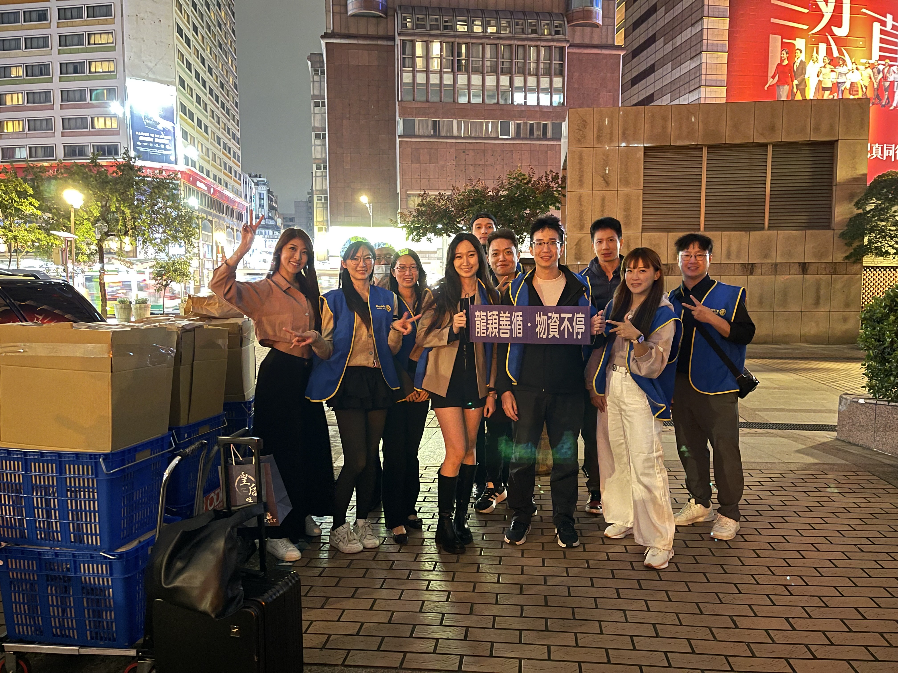

不只是紀錄，更是
留住服務的溫暖
「持續的做，自然就會有影響力。」
大D 主委邀請各位，紀錄龍穎社最真實的堅持。
01. 核心願景：品牌說書人
公益本來就不是說明績效，而是展現一種不間斷的「生活態度」。
我們的任務，是將龍穎社每個月的堅持，轉化為能夠觸動人心的故事。
「我們不拍排場，我們拍互動。
讓畫面說出扶輪人的愛。」
02. 日常足跡：愛在每個角落
記錄我們在關愛之家與北車送暖時的動人瞬間。
龍心穎手（關愛之家）
龍心穎手
對關愛之家小朋友的長期守護。透過紀實影音，捕捉社友與孩子互動的真摯瞬間，展現龍穎社溫柔的一面。
龍穎善循（北車送暖）

龍穎善循
北車街友物資支援，展現人道關懷的最前線。紀錄每一次雙手的交握，讓大眾看見扶輪人走入基層的踏實感。
03. 年度旗艦：3/22 羅浮里義診
溫暖的傳承與擴大，這是我們今年最重要的形象舞台。
桃園復興鄉：可愛教會義診
去年我們在可愛教會成功舉辦了義診。透過當時珍貴的照片與影片，我們證明了龍穎社深耕偏鄉的能力。
註：請將 VIDEO_ID 替換為您的 YouTube 影片編碼
羅浮里：三里大聯合
因為有去年的感動，今年我們獲得區長支持，地點選在寬闊的羅浮里辦公室，將服務擴展至三個里的里民。
- 活動前：啟動數位擴散與里民認識
- 活動中：由總召 大D 統籌，帶領社友與志工共同紀錄感動
- 活動後：年度旗艦紀錄片震撼發布
04. 龍穎回憶寶盒
這不是冰冷的檔案夾，而是我們的**「情感存摺」**。
讓每一格畫面，都成為龍穎社引以為傲的歷史。